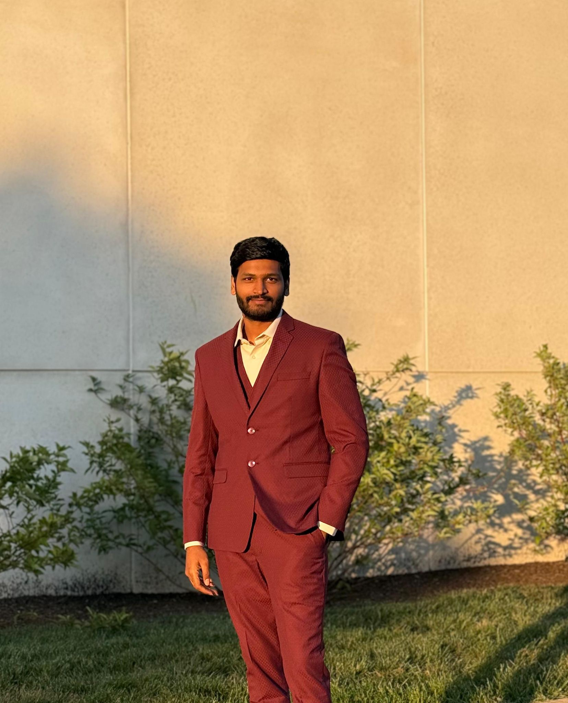

Open to AI + software engineering opportunities
Engineer by trade. Curious by nature.
Sai NihalKonduti.
SOFTWARE ENGINEER / AI & CLOUD

A little research. A lot of making things work.
I build systems ready for reality.
Secure microservices. Reliable AI. Cloud infrastructure that holds up.
AICORE
RAGETLAPICLOUD
MOVE THE FIELD
WITH YOUR CURSOR
WITH YOUR CURSOR
013+years of experience
0215+major projects built
0398%latency reduction
04100+concurrent tenants
01About / point of view
Complex systems.
Clear outcomes.
I turn ambitious AI ideas into secure, observable systems that work beyond the demo.
With an MS in Computer Science from Indiana University Bloomington, I combine research depth with production engineering across AI, cloud infrastructure, and full-stack systems.
CURRENTLYBuilding reliable automation
Secure identity, agentic systems, and real-time operational visibility.
02Selected systems
01
Agentic AI · Advising
CourSelect
A full-stack advising platform with vector search, five-tier agentic memory, and enrollment logic across 8,983 courses.
CockroachDBGeminiFlaskAWS
<3s search↗
02
Full-stack · Social platform
Hoosier Hub
A high-concurrency backend designed for 50,000+ students and 1,000+ clubs with sub-200ms latency.
Spring BootMongoDBOpenAPIJWT
50K+ users↗
03
Cloud systems · ETL
Distributed Log Processing
A high-throughput ingestion engine processing 10GB+ of daily logs in real time while eliminating 90% of manual parsing.
Azure FunctionsAzure SQLPythonETL
10GB+ / day↗
04
Data · Visualization
Untold Stories of IPL
A visual investigation of 16 years of match data, player consistency, and the relationship between results and brand value.
Power BITableauPythonEDA
16 years↗
03Experience / impact
04Working stack
Tools I can
defend in a room.
Chosen for reliability, scale, and measurable outcomes—not résumé decoration.
01Languages
Java · Python · TypeScript · SQL · C · JavaScript · R
02AI / Agentic
Generative AI · LLMs · RAG · LangChain · Prompt Engineering
03Systems
Distributed Systems · Microservices · REST · ETL Pipelines
04Cloud
Azure · AWS · Vertex AI · Docker · Kubernetes · CI/CD
05Data
MySQL · Azure SQL · MongoDB · Redis · Tableau · Power BI
05Data stories / side projects
06Credentials / education
2024 — 2026
Indiana University Bloomington
MS Computer Science · GPA 3.87 / 4.02020 — 2024
B V Raju Institute of Technology
B.Tech Computer Science · GPA 8.75 / 10Enhancing Soft Skill Development with ChatGPT and VR
Exploring how AI and virtual reality can improve soft-skill development in education.
Read publication ↗Open to software engineering, AI engineering, and cloud infrastructure opportunities.